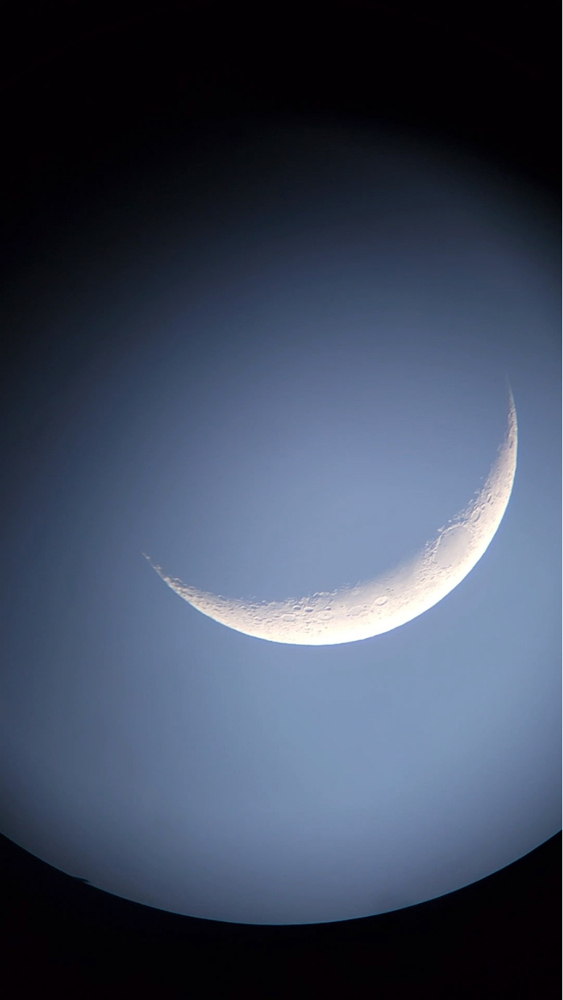
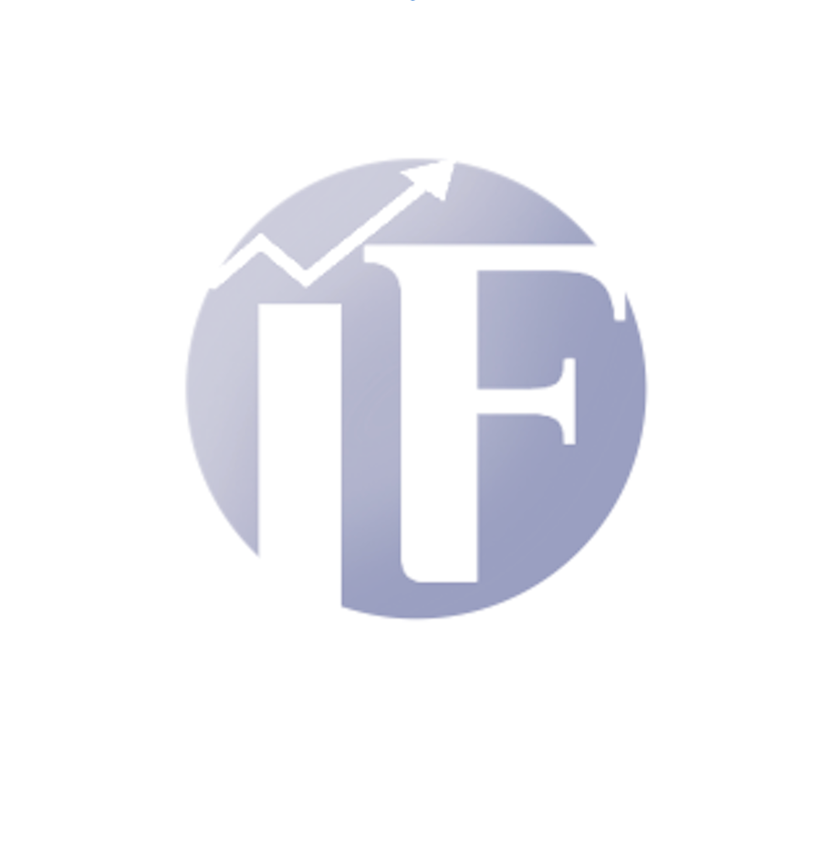
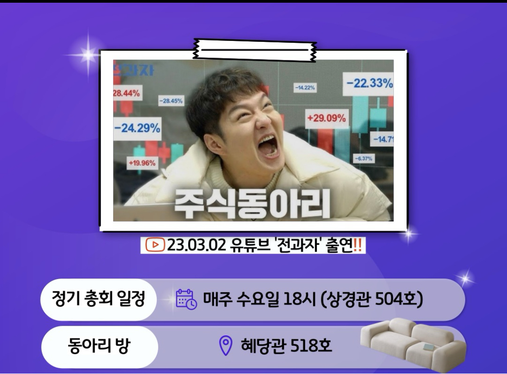

색다른 학습을해보고 싶은 어스인
▶ 별사랑 ◀

단국대 중앙 동아리 별사랑동아리 DUAAA입니다.
저희 동아리의 목적은 천체 관측입니다. 동아리방은 혜당관 519호입니다.
매달 두 번 정도로 정기관측회를 열고, 두 번의 관측 관련 세미나와 학기 당 mt를 진행하고자 합니다. 또한 정기 관측회 외에 희망하는 소수의 동아리 부원들끼리 간단한 관측회를 진행하고 있습니다. 천체 및 우주에 관한 관심이 있으신 학우분들, 별사랑 동아리에 대한 소식을 접하신 학우분들은 저희 동아리에 대한 많은 관심 부탁드립니다.
▶ IF ◀


금융투자연구회 IF는 1999년 한남동시절부터 계속된 전통 있는 중앙 동아리입니다.
Investment and Fundamental을 약자로 가진 동아리인 만큼 이름과 같이 기술적분석인 아닌 기본적분석을 최우선으로 주식투자를 진행하고 있습니다. 또한 교내활동 외에도 DB GAPS 및 여러 금융사의 투자대회에 참여 및 수상, 유튜브 ‘전과자들’ 출현 등, 교외에서도 다양한 활동을 진행하고 있습니다.
다음으로 주요활동 및 커리큘럼에 대해 설명을 해드리겠습니다. 저희 동아리는 기본적 분석에서 가장 주요하다고 판단되어지는 기업의 본질적인 Valuation을 파악하기 위해 기업에 대한 산업분석, 투자포인트 등을 분석하는 기업분석을 프레젠테이션으로 제작하고 발표하는 활동을 베이스로 활동을 진행하고 있습니다. 또한 역사와 전통을 가진 동아리인 만큼 활발한 선배님들과의 인적 네트워킹을 통하여, 선배초청강연 역시 정기적으로 진행하고 있습니다. 또한 뜻이 맞는 동아리원들끼리 그룹을 만들어 외부 대외활동 및 공모전에도 다양하게 참여하고 있으며 연말에는 IF인의 밤을 개최하여, 재학생들과 선배님들 간의 만남 역시 진행하고 있습니다.
최근들어 상승하는 물가 및 부동산 등으로 재테크가 선택이 아닌 필수가 되고 있는 만큼 주식투자 역시 관심이 높아지고 있는 추세인데요, 자극적인 뉴스 등을 통한 투자가 아닌 재무제표 등을 활용한 기본적 투자를 바탕으로 주식에 대해 함께 공부하고 정보를 교류하고 배우는 시간을 가질 수 있었으면 좋겠고 개강, 종강총회 및 MT 등 다양한 친목활동 역시 진행하고 있으니 많은 관심 부탁드립니다. 감사합니다.
▶ 점자리 ◀
점자리는 ‘수놓인 별자리가 하늘을 꾸미듯 점자리를 수놓아 세상을 빛내자!’는 모토 아래 2022년 4월경 설립된 동아리입니다.
적절한 교육을 통해 점자를 읽고 쓸 수 있는 인재 양성에 주력하고 있으며, 최종적으로는 사회 속에서 점자가 다른 주류 문자들과 동일한 지위를 누릴 수 있도록 다방면으로 노력하는 활동을 해나가고 있습니다.